Pembelajaran Kolaboratif
Mata Pelajaran
🌍 IPAS
Membuat Produk daur ulang.
Pada mapel IPAS mengajarkan mendaur ulang limbah pc/laptop yang sudah tidak di pakai menjadi suatu barang yang mengandung unsur kreativitas,estetika dan nilai jual yang tinggi.
Macam macam Produk Kelompok kami
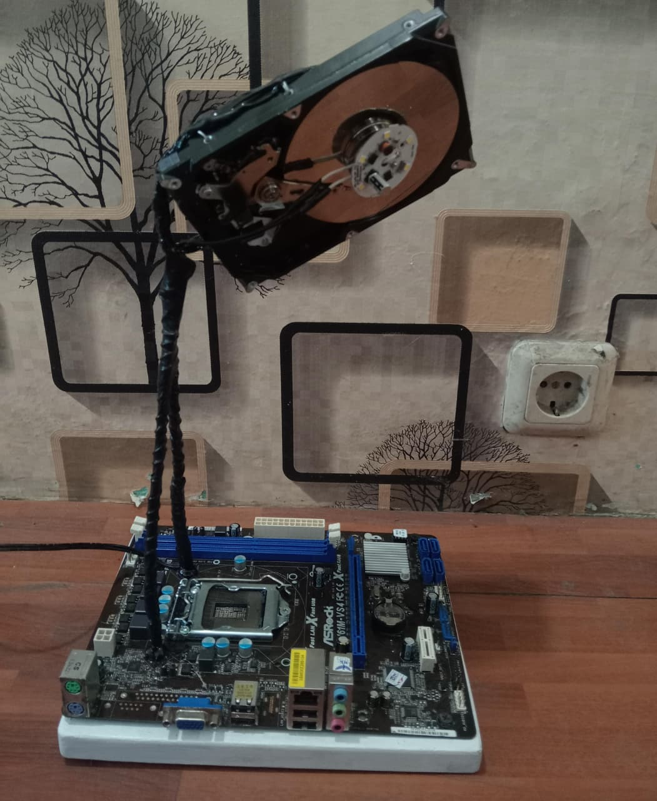
Lampu Motherboard dan HDD

Tas Jeans
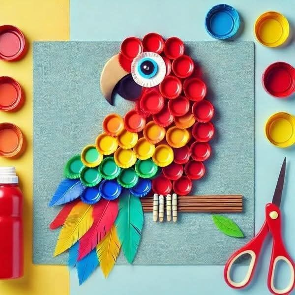
Lukisan Tutup Botol

Rak mini kardus

Pot Bunga Dari Galon
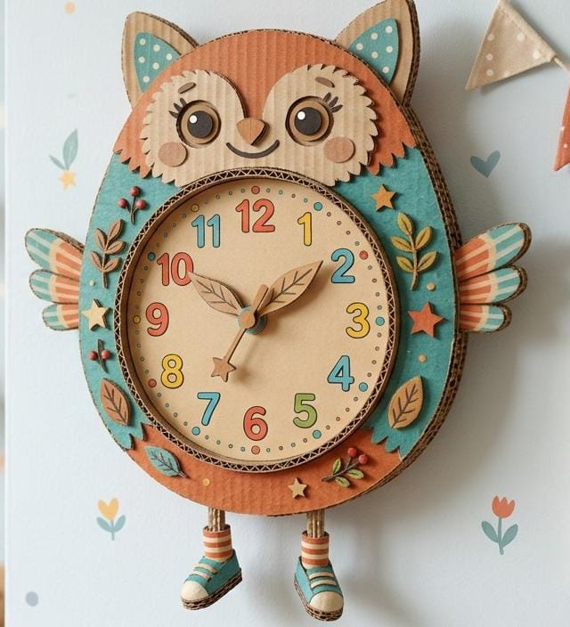
Jam dari Kardus
Untuk Informasi lebih lanjut mengenai Produk kami bisa di lihat di Produk Kami
DDP PPLG
Memebuat Website sebagai bahan presentasi dan membuat laporan
DDP Bu Uli (Website)
Membuat Website untuk presentasi menggunakan HTML+CSS
- HTML
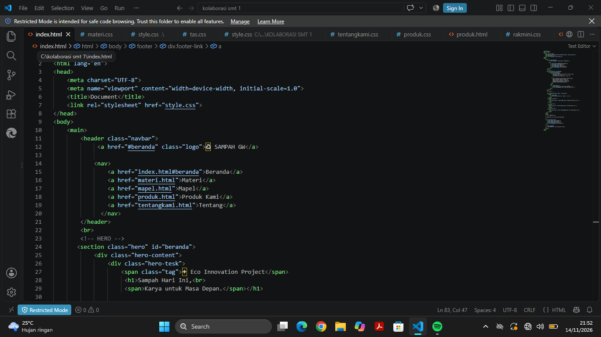
- CSS
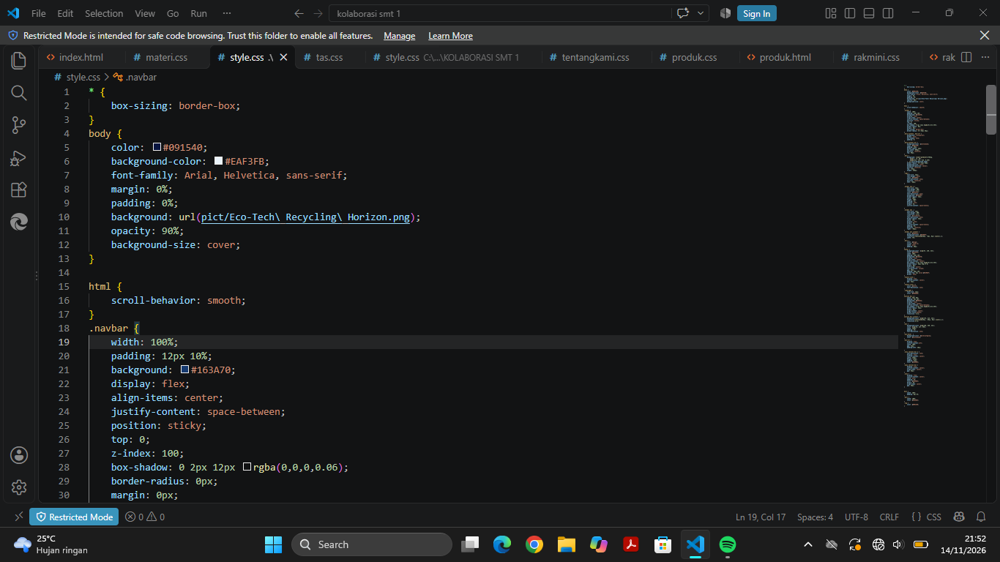
- Hasil
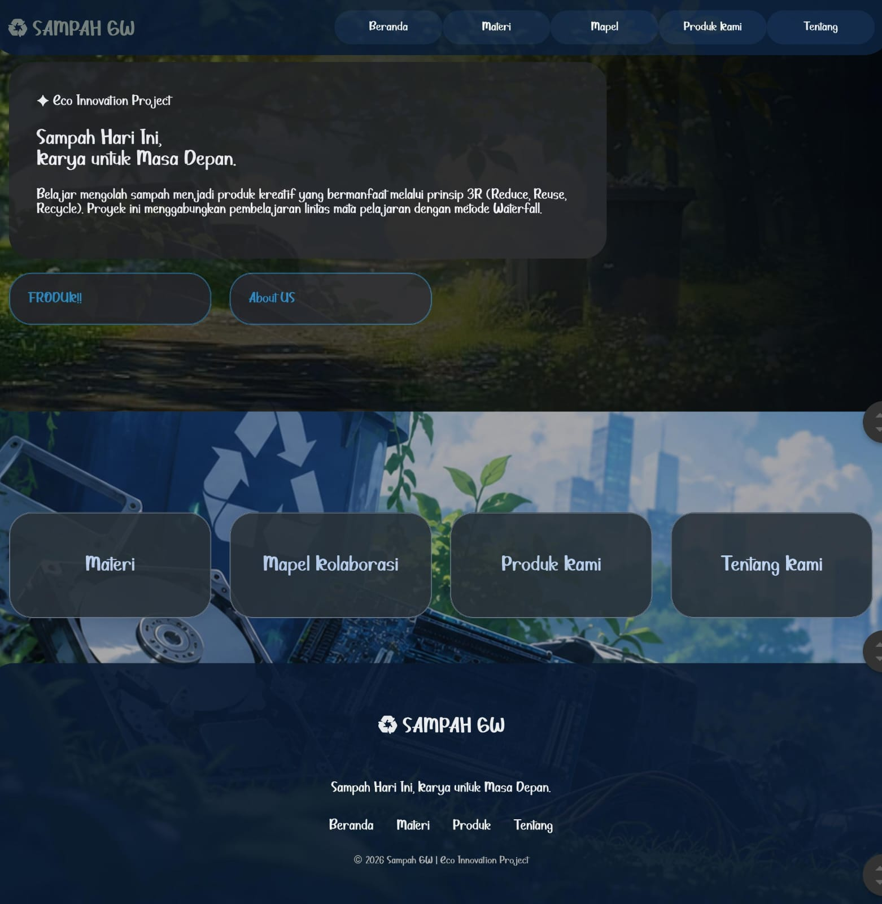
DDP Bu Endah
Membuat laporan mengenai tahapan metode SDLC
🖥️ INFORMATIKA
Mengubah laporan Ecocycle sesuai yang sudah ditentukan
Petunjuk Format Penulisan
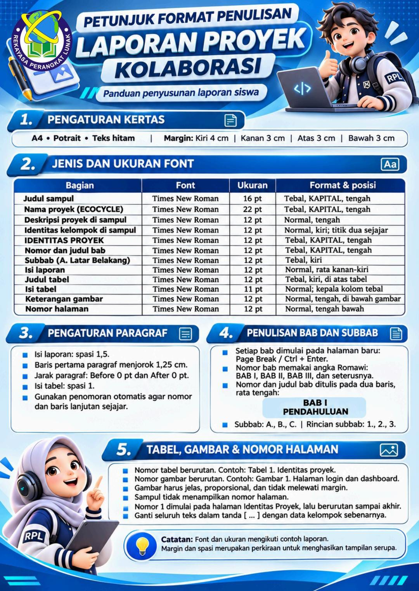
📐 Matematika
Mendesain iklan bundling produk daur ulang menggunakan sistem persamaan linear dua variabel (SPLDV).
Flayer milik Ayda
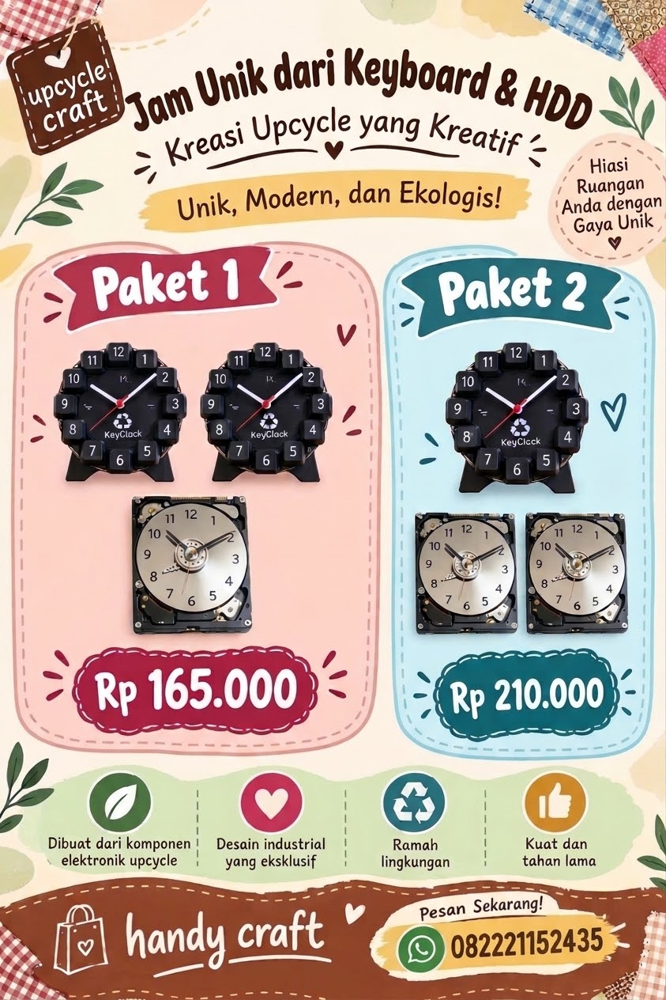
Misalkan:
x = harga 1 Jam HDD
y = harga 1 keyclock
Persamaan Paket
x + 2y = 165.000
2x + y =210.000
Perhitungan
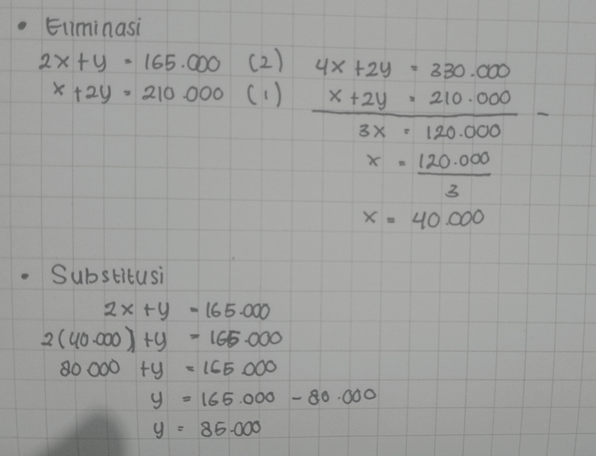
Hasil Penyelesaian
x = Rp85.000
y = Rp40.000
Flayer milik Ararya
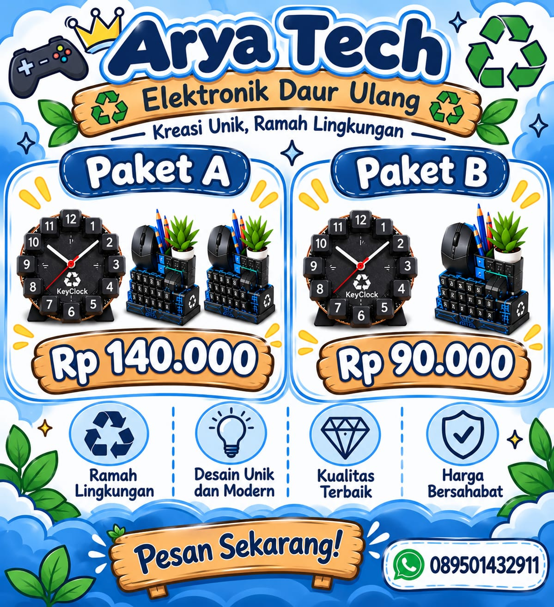
Contoh Perhitungan
Misalkan:
x = harga 1 Jam Dinding Daur Ulang
y = harga 1 Tempat Pensil Daur Ulang
Persamaan Paket
x + 2y = 140.000
x + y = 90.000
Perhitungan
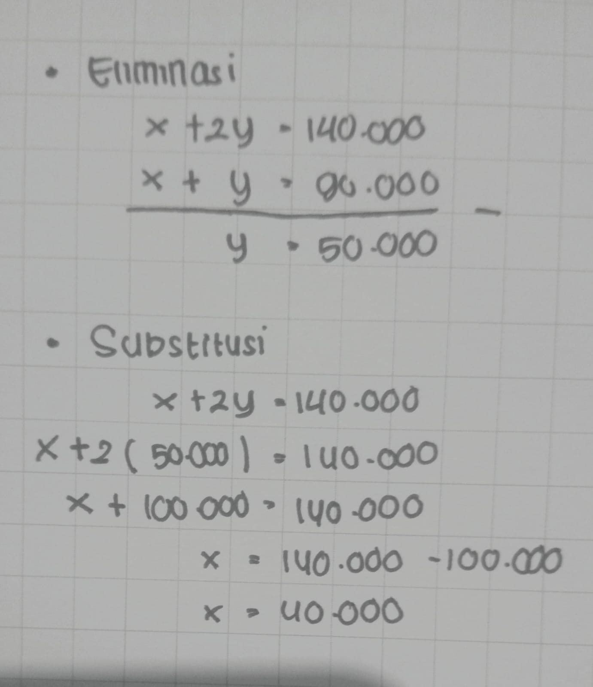
Hasil Penyelesaian
x = 40.000
> y = Rp50.000
Flayer milik Taufiq
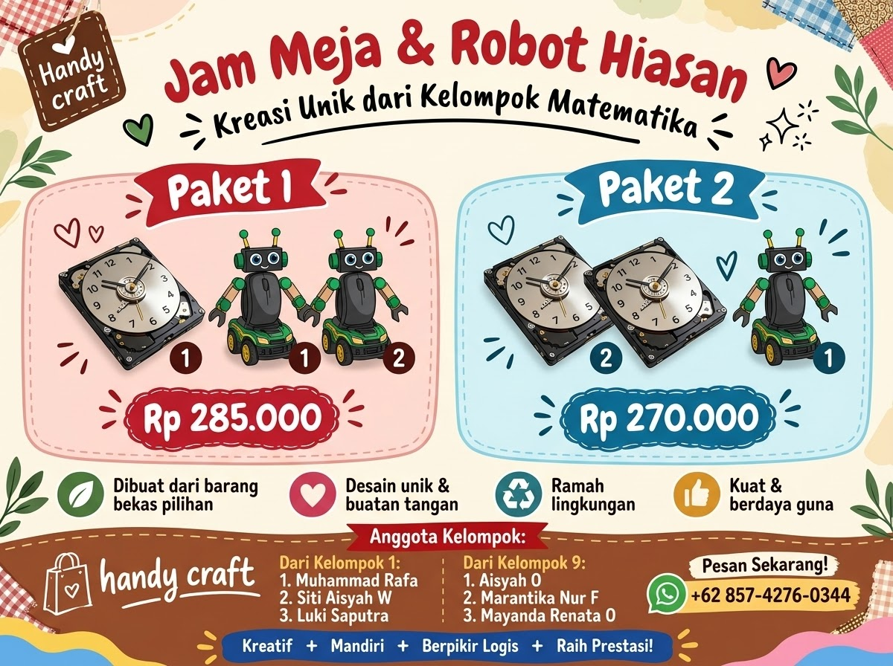
Contoh Perhitungan
Misalkan:
x = Jam HDD
y = Robot
Persamaan Paket
x + 2y = 285.000
2x + y = 270.000
Permisalan
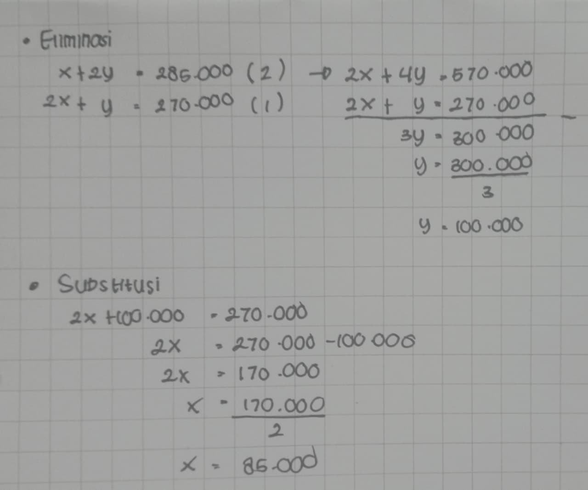
Hasil Penyelesaian
x = Rp85.000
y = Rp100.000
🌍 Bahasa Inggris
Membuat Explanation text tentang isu lingkungan.
Explanation Text - Ayda Zaskia
Breathing New Life into Laptop and PC Waste
Laptop and PC waste, commonly known as e-waste, refers to broken or unused electronic components that often end up neglected in trash bins. Items like old hard drives, motherboards, and cables contain hazardous materials that can damage the soil ecosystem if left buried. Fortunately, there is an exciting way to overcome this issue through upcycling—repurposing these discarded electronic parts into home decorations that are not only beautiful but also functional.
This creative journey begins when dead pieces of hard disks and motherboards are magically transformed into a stunning, futuristic cyberpunk-styled decorative lamp. When the lamp is turned on, the glow reflects off the metallic sheen of the hard drive disc and blends with the intricate circuit patterns of the motherboard, creating a unique and captivating visual effect. Placing this lamp in a child's bedroom or a study room instantly brings a cozy warmth to the space, serving as living proof that what was once considered trash can become high-quality art.
The crafting process itself turns into a fun DIY (Do It Yourself) creative adventure at home. By gathering simple tools and materials like pliers, a soldering iron, a screwdriver, glue, wire, wood, and a 5V LED strip light, the secret behind the lamp begins to take shape. The LED strip is neatly attached around the hard drive frame and carefully soldered at the edges and center onto a wooden base. Once wire supports are tightly secured on the left and right to hold the computer components in place, all the wiring is wrapped neatly with black electrical tape for safety before testing it in a power outlet.
Surprisingly, this eco-friendly creative project also holds promising business potential from an economic standpoint. Creating this highly artistic lamp from secondhand components is an excellent way to start a low-budget, green business. Thanks to its unique and aesthetic design, the finished lamp attracts many tech enthusiasts and interior decor lovers, allowing the crafter to successfully market the product and earn a steady net profit from each unique piece sold
Explanation Text - Ararya Eka A.R
Lamp from HDD and Motherboard
A lamp made from an HDD and motherboard is a creative product that uses unused electronic components. The main materials are a hard disk drive (HDD), a motherboard, a 5V LED light, wire, and cable. Other materials include glue and white and black tape. This product has a unique futuristic and industrial design, making it suitable as a decoration for a bedroom or workspace.
The lamp is made using several tools, such as pliers, a soldering iron, a screwdriver, and a hammer. The HDD is used as the main part of the lamp, while the motherboard is used as a supporting part. The 5V LED light is installed inside the HDD to produce light. Wires and cables are used to connect the LED and other components, while glue and tape help secure the parts.
The process starts by installing the 5V LED light inside the HDD. The wires are then connected and soldered using a soldering iron. Pliers are used to shape and cut the wire, while a screwdriver is used to open or tighten parts of the HDD. The motherboard and HDD are arranged according to the desired design, and glue, tape, and cables are used to make the structure stronger and neater. A hammer can also be used when necessary during the assembly process.
This lamp has several benefits as a decorative and functional product. It can be used as a unique lamp for a bedroom, workspace, or other room. The product also gives old electronic components a new purpose and helps reduce electronic waste. By combining creativity and used materials, an unused HDD and motherboard can be transformed into a useful product with aesthetic and economic value.
Explanation Text - Muhammad Taufiq A
Decorative Lamp from Hard Drive and Motherboard
A decorative lamp made from a hard drive and motherboard is a handicraft product that transforms used electronic components into a useful and artistic decoration. This product uses an old hard drive as its main component and a motherboard as its base or support. It has a unique design that shows the internal parts of the hard drive and uses a 5V LED light as its lighting source.
The materials used to make this product include a hard drive, motherboard, 5V LED light, cables, wire, wood, glue, and electrical tape. The tools needed are pliers, a soldering iron, and a screwdriver. The manufacturing process begins by installing the LED strip inside the hard drive, soldering the necessary components, attaching the components to the support, and connecting the cables until the lamp works properly.
Based on the observation, this product has a distinctive appearance because it combines used electronic components with LED lighting, creating a modern and futuristic decoration. Besides functioning as a decorative lamp, it can also be used to decorate bedrooms or study rooms. Reusing these electronic components helps reduce electronic waste and encourages creativity in making recycled products.
In terms of economic value, the used motherboard costs approximately Rp50,000, while the hard drive costs Rp20,000. The product is sold for Rp90,000, with an estimated profit of Rp20,000. Therefore, this decorative lamp is an example of how electronic waste can be transformed into a creative product with functional, aesthetic, and economic value